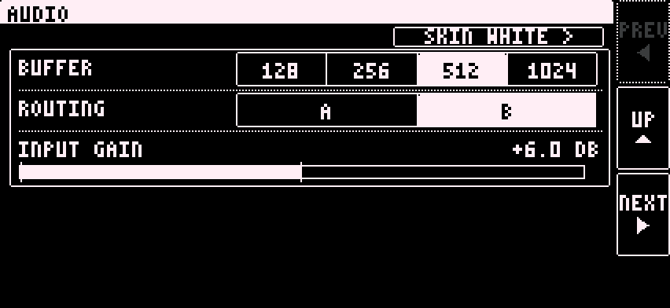

Tap SETUP on the setup page to open the AUDIO sheet. It has four pages. PREV and NEXT turn them. BACK, top left, leaves it.

The Digitakt sends one stereo mix to the app.
| Routing | What happens |
|---|---|
| A | The Digitakt goes through the phone with the synths, FX, looper and master, and returns to the Digitakt over USB. Set INT TO MAIN off. If the app fails, the Digitakt is silent until you turn INT TO MAIN back on. |
| B | The Digitakt plays dry at its own MAIN. The phone adds synths, FX and loop. Set INT TO MAIN on. If the phone disconnects, the Digitakt keeps playing. B is the default. |
SEND LOG at the top of the setup page sends the app's log.